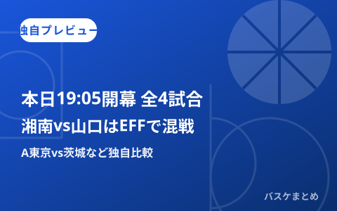

10月22日19:05開幕の4試合、B.NEXT湘南vs山口はポジション別EFFで混戦 A東京vs茨城など独自プレビュー

2026年10月22日は、B.PREMIERで仙台89ERS対横浜ビー・コルセアーズ、アルバルク東京対茨城ロボッツ、B.ONEで東京八王子ビートレインズ対東京ユナイテッドバスケットボールクラブ、B.NEXTでウォルガ湘南対山口パッツファイブの4試合が、いずれも19時05分開始の予定です。本記事はこの4試合について、確認できた範囲の情報から当サイト独自の見どころ予測・比較を行うもので、公式発表の結果速報ではありません。本稿公開時点（19:05前後）はちょうど各試合の開始予定時刻にあたりますが、公式サイトへの接続ができず結果・実際の出場状況は確認できていないため、依然として試合前情報に基づく予測・比較としてお読みください。
仙台vs横浜BC、新カテゴリー制下では今夜が初対戦か
B.PREMIERの仙台89ERSと横浜ビー・コルセアーズは、ゼビオアリーナ仙台で19時05分に対戦する予定です。民間のチケット販売・日程掲載サイトの情報を確認した限りでは、両クラブの今季・新カテゴリー制下での対戦記録は見当たらず、今夜が初対戦となる可能性があります（過去シーズンを含めた正式な対戦成績は未確認です）。両クラブの現時点の順位・勝敗数は公式サイトに接続できず確認できていないため、今回は順位を前提とした勝敗予測は行いません。
A東京vs茨城、オフに補強したフロントコート陣の出来が鍵
アルバルク東京は開幕戦（9月、琉球ゴールデンキングス戦）を84-73で制しており、当サイトの前日（10/21）記事でも「A東京の独走」として序盤の強さに触れています。今夜対戦する茨城ロボッツは、オフにシーホース三河経由ではなく琉球からヴィック・ロー選手（SF/PF）を獲得するなど、フロントコートを補強してきたクラブの一つです。A東京側もDJ・ホグ選手とキヨンテ・ジョンソン選手という外国籍・フロントコート陣を新たに加えており、今夜はオフの補強同士がどう噛み合うかが見どころになりそうです。朝の再確認では、会場がTOYOTA ARENA TOKYOであることをチケット販売サイトの出品情報で確認できました。ただし両クラブの現在の順位・直近の試合内容は公式サイトに接続できず確認できていないため、具体的な勝敗予測は控えます。
B.ONE八王子vs東京U、朝の再確認でクラブ公式サイトから日程を確認
東京八王子ビートレインズと東京ユナイテッドバスケットボールクラブの対戦は、前回更新時点では民間サイトで同日の対戦を独立して確認できていませんでしたが、本日朝の再確認で東京八王子ビートレインズのクラブ公式サイトを確認したところ、両クラブの対戦はB.ONE第6節として10月22日(木)・23日(金)の2日間にわたって行われ、いずれも19時05分TIP OFF・会場は町田市立総合体育館（主催は八王子）であることが分かりました。今夜（10/22）はその1戦目（GAME1）にあたります。一部の民間情報サイトでは10月23日の試合を「プレシーズンゲーム」と表記するなど公式発表と異なる記載も見られたため、本記事ではクラブ公式サイトの情報を優先しています。両クラブの今季の順位・成績は依然確認できていないため、見どころの予測・比較は見送ります。
【独自比較】B.NEXT湘南vs山口、ポジション別の今季平均EFFは湘南が3ポジションで上位
最も具体的な比較材料が揃っているのが、B.NEXTのウォルガ湘南対山口パッツファイブです。当サイトが公式スタッツ（今季平均EFF、dt=avg）を基に2026年10月14日に取得・掲載したポジション別データでは、PG・SG・Cの3ポジションで湘南の選手が上位2名を占めています。特にセンターはハイデン・コヴァル選手（湘南）が平均EFF24.5でトップに立ち、2位のマイク・エドワーズ選手（山口）16.2と8ポイント以上の差があり、インサイドでの影響力の大きさがうかがえます。PGも重冨周希選手（湘南）9.2・伊藤良太選手（湘南）6.0が上位2人を占め、SGも髙木慎哉選手（湘南）11.2・重冨選手9.2が上位2人です。
一方、山口はPF（パワーフォワード）でベルナルド・ダ・シルバ選手が平均EFF16.0でポジション別トップに立ち、湘南のライアン・ローガン選手11.5を上回ります。SF（スモールフォワード）はイブラヒム・ディアビ選手（湘南）10.7とデモンテ・フラニガン選手（山口）9.0が競る形で、ここが拮抗したマッチアップになりそうです。
| ポジション | 1位（平均EFF） | 2位（平均EFF） | 優位側 |
|---|---|---|---|
| PG | 重冨周希・湘南（9.2） | 伊藤良太・湘南（6.0） | 湘南 |
| SG | 髙木慎哉・湘南（11.2） | 重冨周希・湘南（9.2） | 湘南 |
| SF | イブラヒム・ディアビ・湘南（10.7） | デモンテ・フラニガン・山口（9.0） | 拮抗 |
| PF | ベルナルド・ダ・シルバ・山口（16.0） | ライアン・ローガン・湘南（11.5） | 山口 |
| C | ハイデン・コヴァル・湘南（24.5） | マイク・エドワーズ・山口（16.2） | 湘南 |
当サイトの予測（根拠と不確実性）：ポジション別平均EFFの比較だけを見ると、PG・SG・Cで上位を占める湘南が優位なポジションの数で山口を上回っています。ただしこの数値は今季6試合時点の平均値であり、出場試合数が少ないうえ出場選手の状態（出場確定かどうか）は未確認です。山口はヘイデン・ディークハンス選手が公式インジュアリーリストに登録中（公示日9月30日、取得時点）とされていますが、今夜の時点で解除・抹消されているかどうかは本記事作成時点で再確認できていません。したがって「湘南が優位なポジションが多い」という分析は参考情報であり、出場メンバーや当日のコンディションによって結果は変わり得る予測として読んでいただく必要があります。
今夜の確認状況まとめ（取得時刻・対象データ日）
| 項目 | 対象データ日 | 確認時刻 | 状態 |
|---|---|---|---|
| A東京vs茨城の開始時刻・会場（TOYOTA ARENA TOKYO） | 2026.10.22分 | 2026-10-22 19:05頃 JST（民間サイト複数・19:05再確認） | 変更なしを再確認（公式一次情報は未接続） |
| 湘南vs山口の開始時刻・会場（寒川総合体育館） | 2026.10.22分 | 2026-10-22 19:05頃 JST（民間サイト複数・19:05再確認） | 10/22 19:05説を維持しつつ、10/23 16:05とする別表記も新たに確認（食い違い未解消） |
| 仙台vs横浜BCの開始時刻・会場 | 2026.10.22分 | 2026-10-22 19:05頃 JST（民間サイト複数・19:05再確認） | 変更なしを再確認（公式一次情報は未接続） |
| B.ONE八王子vs東京Uの日程（10/22・10/23の2日程） | 2026.10.22〜23分 | 2026-10-22 08:10頃 JST（八王子クラブ公式サイトで朝再確認） | 確認（クラブ公式。19:05時点で同サイトに更新は見当たらず朝の内容を維持） |
| 湘南vs山口 ポジション別平均EFF | 取得時点の今季累計 | 2026-10-14 02:14〜02:19 JST | 本日朝・正午・19:05の再確認でも更新なし |
| 公式インジュアリーリスト | 2026-09-30公示分（山口選手1名） | 2026-10-14 02:14 JST | 本日朝・正午・19:05とも接続不可（名前解決不可）・未確認 |
| A東京・茨城・仙台・横浜BCの今季順位・成績 | ― | ― | 本日朝・正午・19:05とも未確認 |
| 4試合の結果・実際の出場時間 | 2026.10.22分 | ―（本記事作成時点で未発生/未確認） | 試合開始予定時刻のため未確認。結果は別途確認予定 |
Q. 「平均EFF」とは？
A. 公式用語集によるB.LEAGUEの選手評価指標（Efficiency）で、得点・リバウンド・アシストなどを基に算出されます。本記事では公式スタッツページの今季平均値（dt=avg）をそのまま使用し、通算合計を試合数で割って編集部が作り直すことはしていません。
出典：B.LEAGUE公式（試合詳細・スタッツ・インジュアリーリスト）／琉球新報「アルバルク東京、開幕戦で琉球に84-73」／東京八王子ビートレインズ クラブ公式サイト（第6節 対東京ユナイテッド 試合情報）／チケット販売・日程掲載サイト（ticketjam、スポカレ）
https://www.bleague.jp/game_detail/?ScheduleKey=506495&tab=1
https://www.bleague.jp/game_detail/?ScheduleKey=506496&tab=1
https://www.bleague.jp/game_detail/?ScheduleKey=507273&tab=1
https://www.bleague.jp/game_detail/?ScheduleKey=507923&tab=1
https://www.bleague.jp/news/injury.html
https://www.bleague.jp/stats/?year=2026&tab=3&target=player-b3&value=EFFPG&o=desc&e=15&dt=avg
https://ryukyushimpo.jp/news/entry-5520985.html
https://trains.co.jp/news/2026-27/6_TUBC
https://ticketjam.jp/ticket/sports/10192885
https://spocale.com/sports/5/game/349585